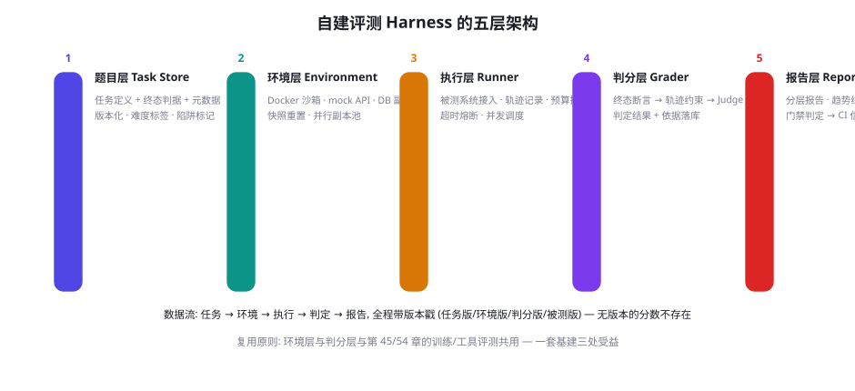
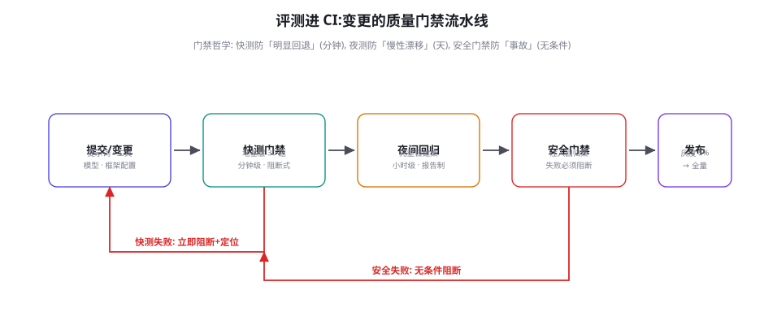

构建你自己的评测：沙箱、容器化与 CI 集成
评测篇前六章给了方法论与基准地图，本章把它们装进工程容器：评测 Harness 的五层架构、Docker 沙箱与并行副本池、CI 门禁的三级流水线（快测/夜测/安全门禁）、以及评测体系的「冷启动包」。本章的目标很实际——读完就能动手，两周内让你的团队拥有第一套可复跑、可门禁、可追溯的自建评测。
评测 Harness 的五层架构

五层的职责边界与设计要点：① 题目层（Task Store）——任务以声明式格式存储（第 51 章的 YAML 规范），带难度标签、陷阱标记、能力维度标签、终态判据；版本化是生命线（题目改动 = 版本递增，历史分数可重算）。② 环境层（Environment）——Docker 沙箱 + mock API + 数据库副本，提供 reset/step/evaluate/dump/snapshot 五接口（第 45 章训练环境的同构复用——一套基建三处受益：训练采样、功能评测、安全评测）。③ 执行层（Runner）——被测系统的统一接入适配（同一模型/框架/生产代码三种被测对象都能进）、轨迹全记录、预算控制（步数/token/时间三上限）、并发调度。④ 判分层（Grader）——三层判分递进（终态断言 → 轨迹约束 → Judge），判定结果与「依据」一起落库（第 55 章红队判定的经验：没有依据的判定无法复核）。⑤ 报告层（Reporter）——第 50 章的报告骨架在此实例化：分层报告、趋势线、回归对比、门禁判定。
评测体系腐化的头号原因是「执行层与被测系统纠缠」——评测代码里 import 了业务代码、调用了业务内部函数，业务一重构评测就断，最后评测库荒废。防线是黑盒契约：执行层与被测系统之间只有一个接口——「输入任务，输出轨迹」（HTTP 或 CLI，进程隔离），除此之外零耦合。契约的三个推论：① 被测对象可替换——模型 A、模型 B、不同框架、甚至人类（人工基线，第 53 章）都从同一接口进出，分数可比性由契约保证；② 评测环境可移植——评测库不依赖业务技术栈，业务换语言换框架评测照跑；③ 「生产代码即被测对象」成为可能——最强的评测姿态是把生产服务原样接入（同一镜像、同一配置），测的就是你要上线的东西（第 55 章「评测-生产配置一致性」的工程实现）。衡量你的 Harness 健康度的简单测试：能否在一个下午接入一个全新被测对象？能，契约在起作用；不能，纠缠已经发生。
执行层的「预算控制」值得单独展开，因为它是评测公平性的隐形支柱——「预算不一致的对比」是自建评测里最隐蔽的作弊形态（往往是无意的）。预算三上限的设置与记录：① 步数上限——按任务难度的分位数设定（L1 任务取 P90 × 1.5），上限写入任务定义（是题目的一部分，第 50 章口径三）；② token 上限——对话与工具调用的总 token 预算，模拟真实成本约束（第 76 章的账本在评测里的投影——「无限预算下的聪明」不是能力）；③ 时间上限——墙钟时间熔断，防「等长任务里的死等」。三个上限随每次分数记录落库——「预算不明的分数不可比」与「无版本的分数不存在」是同一条纪律的两半。执行层的并发调度还有一个容易忽略的细节：对限流的模型 API，并发数要与生产配额一致（评测用 10 并发、生产限 3 并发——评测测出的延迟与行为在生产不成立，这是「评测-生产一致性」在 API 层的延伸）。
沙箱与容器化：可复现的技术底
沙箱化的四个工程决策：① 容器边界——每个评测任务一个容器（任务间零污染），高危任务（安全评测、写操作）容器内再分层（网络隔离、文件系统只读、seccomp 限制）——第 60 章权限分级的沙箱版；② 数据策略——数据库用「合成数据 + 真实 Schema」（第 52 章「结构逼真、数据脱敏」的执行）；③ 并行副本池——环境容器按「任务类型」预启动常驻（Web 类、DB 类、代码类各一组），任务到来即取即用、用完重置——评测吞吐的优化重点不在并发数在「重置速度」（快照回滚 <3 秒是流畅的门槛）；④ 依赖锁定——容器镜像全量 pin 版本（系统库、Python 包、模型 API 版本），镜像哈希写进评测报告的 meta 段——「三个月后重跑分数一致」是可复现的验收标准。
services:
agent-under-test: # 被测系统 — 生产同款镜像
image: registry/ops-agent:v1.8.2 # 与生产部署同 tag
environment:
- TOOL_BASE_URL=http://mock-apis:8080
- AGENT_CONFIG=/eval/config/prod-parity.yaml
networks: [eval-net] # 隔离网络: 出站需经 egress-proxy
depends_on: [mock-apis, postgres]
mock-apis: # mock 工具层 — 第20章工具层的镜像
image: registry/eval/mock-apis:2026.09
volumes: [./scenarios:/scenarios:ro] # 场景注入只读
egress-proxy: # 出站代理 — 安全评测的出站白名单
image: registry/eval/egress-proxy:1.2
environment:
- ALLOWLIST=internal-api,mock-apis # 其余全部拦截并记录
# 安全评测时: 恶意载荷的「外传」会命中这里 → 规则判定的证据
postgres:
image: registry/eval/opsdb-synth:2026.09 # 真实Schema+合成数据
# 快照回滚: docker exec ... pg_restore < snapshot.sql (<3s)骨架里最值得注意的角色是 egress-proxy（出站代理）——它同时服务三个目的：安全评测的出站判定（第 55 章的「数据是否流向外部域名」的检测点）、生产行为模拟（生产环境的出站限制在评测里如实存在）、以及意外的第三重身份——评测期间的「诚实性探测器」（被测 Agent 若试图访问评测白名单外的资源，本身就是一条有趣的轨迹信号）。评测基建里像这样「一次建设多处受益」的组件，值得优先投入。
报告层的「回归对比」视图值得给一个设计范本，因为它直接决定评测报告的「被阅读率」。一页式回归报告的结构：① 顶部三行——本次分数 vs 上次分数 vs 上上周分数（三列，箭头标变化方向）；② 分层热力条——按能力维度 × 难度档的网格，色块深浅 = 分数，变化量直接标注（+3.2pp）——热力条让「哪里变了」一秒可见；③ 变更摘要——本次评测对应的变更列表（git 区间 + 配置 diff 摘要），「分数变化 ↔ 变更」的关联在同一页完成；④ 异常样本链接——分数变化最大的 5 个任务的轨迹链接，点进去直接看轨迹。「一页 + 链接」是报告设计的黄金结构：一页承载决策信息，链接承载诊断深度——决策者看一页，工程师点链接。反模式是把全部轨迹 dump 进报告附件（没人看）或只有摘要没有轨迹（没法诊断）——报告层的成熟度，用「团队成员主动打开报告的频率」来度量。
环境层还有一个「多版本并存」的进阶需求值得提前设计：同一评测集在多个环境版本上并行跑分的能力。三个典型场景需要它：① 环境升级的对照验证——新镜像上线前，新旧镜像各跑一遍全集，分数差超过阈值的任务逐题排查（环境变更的「灰度」）；② 跨季度的分数可比性——历史分数用「旧环境锚点」重算（防腐机制 ③④ 的执行依赖）；③ 多部署形态验证——同一套题在生产镜像与沙箱镜像各跑（第 55 章「评测-生产一致性」的量化）。实现上不复杂：环境版本作为 Runner 的参数而非配置——「同一份轨迹数据，两套环境各判一次」的架构，判分层与报告层天然支持（分数记录里本就带环境版本戳）。这个能力在单版本时期看起来是过度设计，但第一次「环境升级导致分数跳变、无法归因」的事故会让它物超所值——多版本并存是评测基建里典型的「第零天就要留口子」的设计。
评测进 CI：三级门禁流水线

三级流水线的配置细节：快测门禁（Fast Gate）——地基层工具评测 30 题 + 高频任务 20 题，预算 5 分钟，门禁规则「任一子能力掉 >5pp 即阻断」；跑在每次变更上（提示词、工具描述、模型版本、框架配置——四类变更全部触发），这是「评测变成肌肉记忆」的关键：快测太慢就没人愿意改东西了。夜间回归（Nightly）——完整自建集 + 分层报告 + 与上周趋势对比，输出到团队看板；它防的是「快测盲区的慢性漂移」（每单次变更都看不出，累积起来系统变形——夜测的趋势线是「漂移探测器」）。安全门禁（Security Gate）——注入回归集 + 出站白名单检查，失败无条件阻断（第 55 章「安全退化是事故问题」的流水线兑现）。三级的共同纪律：门禁阈值是团队公开承诺，不是某个人的秘密配置——阈值写在仓库根目录的配置文件里、改动走 review——评测治理进代码库，是「评测即工程」的最后一格。
| 层级 | 触发 | 规模 | 预算 | 失败动作 | 报告对象 |
|---|---|---|---|---|---|
| 快测门禁 | 每次变更 | ~50 题 | 5 分钟 | 阻断 + 定位信息 | 提交者 |
| 夜间回归 | 每日定时 | 全集 + 影子集 | 1~2 小时 | 报告 + 告警 | 全团队看板 |
| 安全门禁 | 变更 + 每周 | 注入回归集 | 15 分钟 | 无条件阻断 | 安全负责人 |
| 深度诊断 | 按需触发 | 失败聚类样本 | 人工主导 | 诊断报告 | 工程 + 业务 |
| 发版验证 | 发布前 | 全集 + 真实回放 | 半天 | 发布决策 | 决策者 |
题目层工作坊（冷启动第 4~6 天）是两周计划里最容易翻车的环节——「出题」听起来轻松，做起来最容易产出「无效题」。工作坊的组织配方：① 人员构成——业务骨干 3~5 人 + 工程师 1~2 人（工程师负责实时校验「这题能不能判」——判不了的题当场改）；② 时间盒——每人每小时 3~5 题为目标，超时说明题目设计有问题（通常是「验收标准写不清」）；③ 现场互审——每 30 分钟交换审题：另一人只看「任务描述 + 验收标准」，尝试回答「我该怎么判这道题」——答不出即题目缺陷（歧义、判据模糊）；④ 难度即时标注——出题人按三档预标难度，下午的「跑通验证」（把每题在当前系统上跑一遍）反证难度标签——「当前系统全过的题不该超过 30%」——全过的题库没有区分度（第 50 章饱和问题的题库版）。工作坊的产出验收标准：80% 的题目「判分脚本一次写通」——达不到说明验收标准的写法培训（第 51 章题目规范）没到位，宁可重开半天工作坊，不要带着一堆「判不了」的题进入工程阶段。
冷启动包：两周计划
把本章全部内容压成一个可执行的两周计划（第 54 章「最小可用工具评测包」的完整版）：第 1~3 天——沙箱骨架（docker-compose 四角色 + 快照回滚脚本 + 出站代理），验收标准「被测系统能在沙箱里完整跑通 3 个手工任务」；第 4~6 天——题目层 50 题（业务团队出题工作坊：按第 47 章种子清单造题，含 10 道陷阱题、5 道拒答题、3 道隐式指代题），执行层接入（黑盒契约实现）；第 7~8 天——判分层三层实现（终态断言为主，AST 兜底），第一次全量跑分 + 人类基线（第 53 章方法，每题 2 人）；第 9~10 天——报告层（第 50 章骨架的 YAML + 一页 HTML）与快测门禁接入 CI；第 11~12 天——安全样本第一批（第 55 章注入体检的 10 载荷 + 出站验证），安全门禁上线；第 13~14 天——夜间回归定时任务 + 团队看板 + 阈值配置入库，全流程演练一次「变更 → 门禁 → 阻断 → 修复 → 通过」。两周后你拥有的不是一套完美的评测，而是一套「活的」评测——完美靠季度迭代，活的靠今天启动。
把「冷启动包」的第一步今天做掉：写 docker-compose 四角色骨架并验证「快照回滚 <3 秒」。这是整个 Harness 里唯一有硬性性能指标的部分，也是最容易在后期拖累评测吞吐的部分——第一天就把它做对。验证方法：往数据库写 10 万行脏数据 → 跑回滚脚本 → 用一个断言脚本验证「回到基线状态的时间」。如果回滚慢（>10 秒），换方案（预建多副本轮换、或每任务一个容器用完即弃）——这个决策影响后续所有评测的体验，值得第一周就锁死。
数字感收尾（Harness 建设与运维的成本账本）：两周冷启动包的人力——工程 2 人 × 2 周 + 业务出题 3 人 × 3 天 ≈ 7 人周；每次快测的 token 成本——50 题 × 平均 5 万 token ≈ 250 万 token，按中型模型 $2~8/次；夜间回归——全集 300 题 ≈ $15~50/晚。年化总成本约 12~15 人周 + $1~2 万 token 费。对照收益的三笔：选型决策质量（第 51 章「内部基准第一年回本」）、变更事故的提前拦截（一次生产事故的止损通常 >5 人周）、与「评测驱动改进」的复利（第 44-49 章所有训练项目的靶场）——评测是全书性价比区间最高的基建，唯一的高成本形态是「建了不用」——所以本章把「进 CI、进看板、进 OKR」写成了硬性要求：让评测长在组织的日常节律里，是它存活的第一条件。
三个高频疑问
Q：没有 Docker 环境的公司（受管控的桌面环境），沙箱怎么做？三个降级方案按保真度排序：① 虚拟机模板——VMware/HyperV 的链接克隆（linked clone）接近容器的重置速度，管控环境里通常可申请；② 进程级隔离 + 网络代理——mock 工具层用本地进程 + 端口命名空间模拟，出站代理用本地 HTTP 代理实现——「环境隔离」让位给「逻辑隔离」，安全评测的样本要相应降级（不做破坏性实验）；③ 纯 API 级评测——环境抽象成「工具 mock 服务」（远程部署一份，全公司共享），被测系统从任意环境接入——保真度最低但零环境要求，作为起步方案完全够用（第 54 章最小包就是这个思路）。降级的通用原则：隔离层次降级时，安全评测的降级幅度要大于功能评测（破坏性验证的缺位要有意识地记录在「覆盖度矩阵」的空白格里，第 55 章）。
Q：评测把 CI 拖慢了，研发开始绕过门禁（强制合并）怎么办？这是评测工程最现实的组织危机，解药分三层：① 快测瘦身到「心理阈值」以内——工程师对 5 分钟内的门禁接受度高，超过 15 分钟绕过率飙升——把快测压到 50 题以内、mock 环境预热常驻、模型调用并发打满；② 失败信息的「可行动性」——门禁失败时输出的不是「FAIL」，而是「哪个子能力掉了、失败轨迹的前 3 步、疑似相关变更」——失败信息越可行动，绕过动机越低；③ 分级豁免机制——提供「带豁免合并」（自动创建工单 + 进入下次夜测优先队列 + 豁免记录公开可见）——有纪律的旁路比无纪律的强攻更能保护体系（第 55 章「有意识的空白」原则在 CI 的翻版）。根本的认知是：绕过门禁不是工程师的错，是门禁成本过高的信号——修门禁，不修人。
Q：自建评测与公开基准的关系，成熟团队是怎么配比的？一个经过验证的演进路径：起步期（0~6 个月）——自建 70% + 公开 30%（自建是信任的来源，公开提供外部参照）；成熟期（1 年+）——自建 85% + 公开 15%（公开基准降级为「年度体检」——季度选型跑一次，不做日常回归）。配比转移的驱动是「业务分布的特异性」：业务越特异，公开基准的信息量越低（第 50 章相关性打折）。两条航向保持不变的纪律：① 公开基准的「参照锚」角色不能丢——完全不跑公开基准的团队会失去与外部生态的对话能力（「我们的模型在我们任务上 90%」对外没有说服力）；② 自建评测的「防自我欺骗」机制不能丢——影子集、人类基线、年度四问体检（第 50 章）——自建评测的最大风险不是懒而是「顺着业务的偏见出题」。配比是浮动的，纪律是锚。
本章在全书网络中的连接：上游是第 50-55 章（评测篇全部方法论的工程收拢）、第 45 章（训练环境五接口——Harness 环境层的同构复用）、第 35 章（Agent 运行时——执行层的工程原型）；横向是评测篇的收官与第 6 部分（安全篇）的入口——沙箱与权限的工程从评测域延伸到生产域；下游通向第 76 章（成本经济学——评测预算的分配账本）、第 81-90 章（实战篇——每个项目的验收环节都跑在本章的 Harness 上）。复习锚点：五层架构图（56-1）、黑盒契约三推论、compose 四角色、三级门禁图（56-2）、两周冷启动包。
关于「评测体系的长期运维」补一段「防腐指南」，因为 Harness 建成后的第一年是最危险的荒废期。五个防腐机制按重要性排序：① 变更触发器的完备性——「每次模型/提示/工具/配置变更都触发快测」的触发器清单要每季度审计一次（新类型的变更出现而没有触发器 = 盲区）；② 影子集的物理隔离复查——影子集的访问权限、内容轮换是否按纪律执行（第 50 章）；③ 判分器的年度重校——抽 100 条历史轨迹重新判分，与当年判定对比——判分逻辑漂移（依赖的第三方库升级、Judge 模型换版）会让「历史分数」与「今日分数」不可比；④ 环境镜像的半年度刷新——基础镜像的 CVE 修复与依赖更新（刷新 = 评测集变更流程，历史分数用旧镜像重算锚点）；⑤ 「评测健康度」周报——把门禁通过率、夜测趋势、影子集漂移、判分重校差值打包成一页周报——评测体系需要自己的评测，这页周报就是它。五个机制的总运维成本约每人每天 15 分钟——远低于体系荒废后的重建成本，但需要「它是正式职责」的组织确认（排进某人的 OKR），否则防腐机制会先于评测荒废。
一个关于「评测资产的所有权」的收尾讨论：Harness、题库、判分器、报告——这些资产在公司内的归属常常模糊（「评测是工程师顺手写的」），而模糊的所有权是荒废的根源。四种资产的归属建议：题库——业务团队所有（题目是业务知识的编码，业务对质量负责）；Harness 与环境——工程团队所有（基建属性）；判分器——联合所有（判分逻辑是业务标准与工程实现的合取，变更双签）；影子集——评测负责人独有（第 50 章的隔离纪律）。所有权落进组织架构的形式：每类资产在代码仓库里分开目录、各自有 CODEOWNERS 文件——用工程仓库的治理机制承载评测资产的所有权，比行政规定有效得多。评测篇到本章完成了从方法论到工程的全部落地——下一章转向评测里最后一块「非工程」的拼图：当判定只能交给另一个 LLM 时，可信度从哪来。
再补一条给「多产品线公司」的架构建议：评测资产的平台化与「领域层」的分离。多产品线共用 Harness 与环境层（平台层——工程团队维护），各产品线只维护自己的题库与判分器领域包（领域层——业务团队维护）——平台层提供「任务规范、沙箱底座、三层判分框架、报告模板」的标准化接口，领域层以「插件包」形式接入。这个架构的收益在第二条产品线接入时显现：边际成本从「重建一套评测」（7 人周）降到「写一个领域包」（1~2 人周）。两个前提条件要在第一条产品线时就守住：① 题目/判分器的格式严格标准化（第 51 章 YAML 规范就是为这一天准备的）；② 抵抗「为第一产品线走捷径」的诱惑（把业务逻辑硬编码进平台层——第二线接入时全部返工）。平台化的时机判断：单一产品线时「像平台那样写代码」，两条产品线时「正式抽平台」——设计先行、抽象滞后，是基建分层的通用节律。
最后一段给「第一道门禁上线」那一刻的仪式感建议：团队里第一次「变更被快测门禁拦下、修复后重新通过」的完整闭环，值得公开庆祝一下——它标志着评测体系从「基建」变成了「生产关系」。此后每个季度回顾门禁拦截记录：「拦下了什么、避免了什么、误拦了多少、误拦的代价」——这份回顾是评测体系向管理层证明价值的年度报告，也是向团队证明「门禁不是官僚流程」的信任积累。评测篇的终章寄语：方法（50 章）、基准（51-53 章）、原子（54 章）、安全（55 章）、工程（本章）——五件装备齐了，剩下的只有开始。
本章小结
- Harness 五层：题目（版本化）、环境（五接口）、执行（黑盒契约）、判分（三层递进 + 依据落库）、报告（分层 + 趋势）。
- 黑盒契约是防腐第一原理：唯一接口「输入任务、输出轨迹」——被测可换、环境可移、生产代码即被测对象。
- 沙箱四决策：任务级容器、合成数据 + 真实 Schema、预启动副本池（重置 <3s）、全量依赖 pin + 镜像哈希入报告。
- egress-proxy 一举三得：安全判定点、生产模拟、诚实性探测器——优先投入「一处建设多处受益」的组件。
- 三级门禁：快测（5 分钟、阻断）、夜测（趋势、报告）、安全（无条件阻断）——阈值公开、豁免有痕。
- 两周一揽子冷启动包：第一天锁死快照回滚性能，两周后拥有一套「活的」评测。
自测题
- 审查你现有（或计划的）评测代码：找出三处「与被测系统的纠缠」，各写一条解耦方案。
- 设计你的快测门禁 50 题清单：从自建全集怎么抽？各能力维度的配比？为什么？
- 沙箱回滚超时问题的三个备选方案各适合什么场景？为你的团队选一个并说明理由。
- 把「两周冷启动包」的 14 天计划抄进你的项目看板，标出哪三天会卡住、卡住时找谁。
参考文献与延伸阅读
- OpenAI (2024). Evals Framework. github.com/openai/evals（公开的评测框架参考——题目格式与判分器组织）
- Yang, J. et al. (2024). OpenHands: An Open Platform for AI Software Developers. arXiv:2407.16741（沙箱化执行环境的开源实现）
- Zhou, S. et al. (2023). WebArena. arXiv:2307.13854（自托管环境的工程蓝本）
- Hammond, K. et al. (2025). DeepEval: LLM 评测的 pytest 化框架. github.com/confident-ai/deepeval（评测进 CI 的工程参照）
- Humeniuk, R. et al. (2024). AgentOps: Observability and Evaluation for AI Agents. github.com/AgentOps-AI/agentops（评测与可观测性的接口）
- 工程实践：Docker Compose 文档 · GitHub Actions（本章流水线的实现底座）